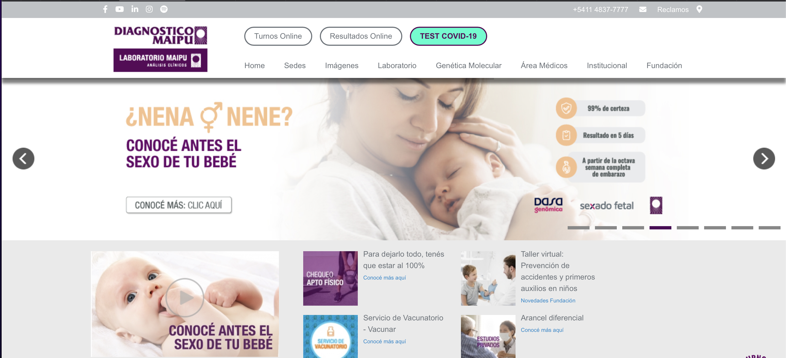
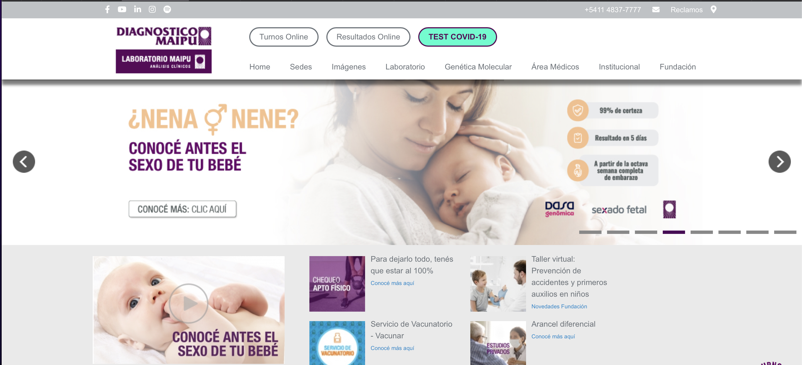
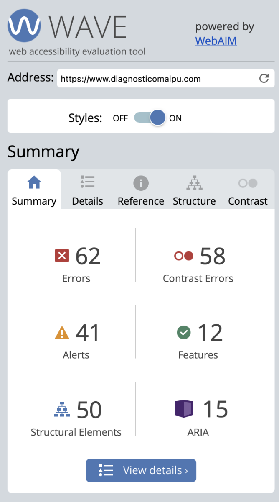
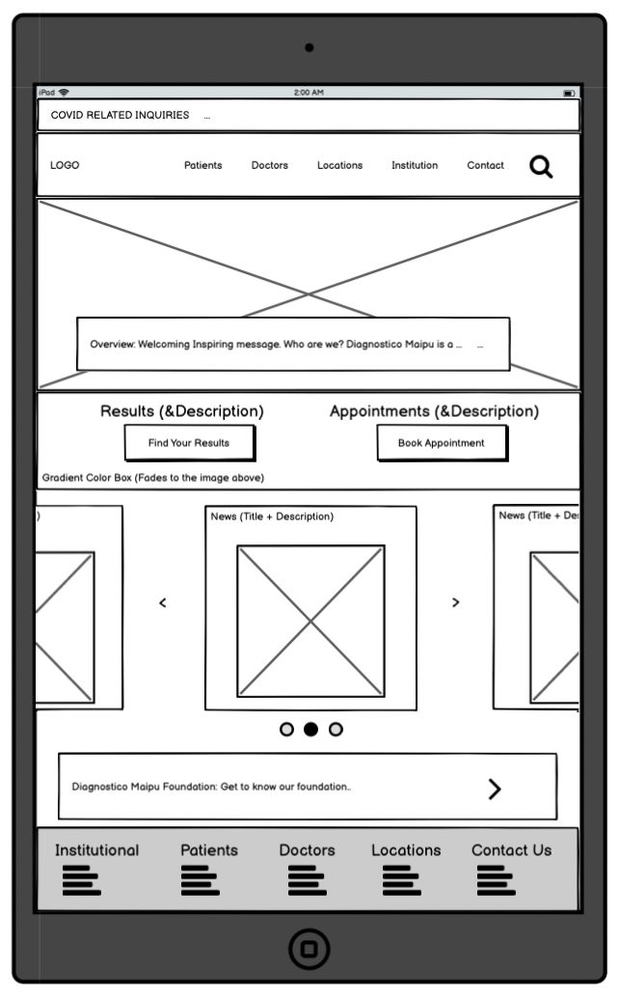
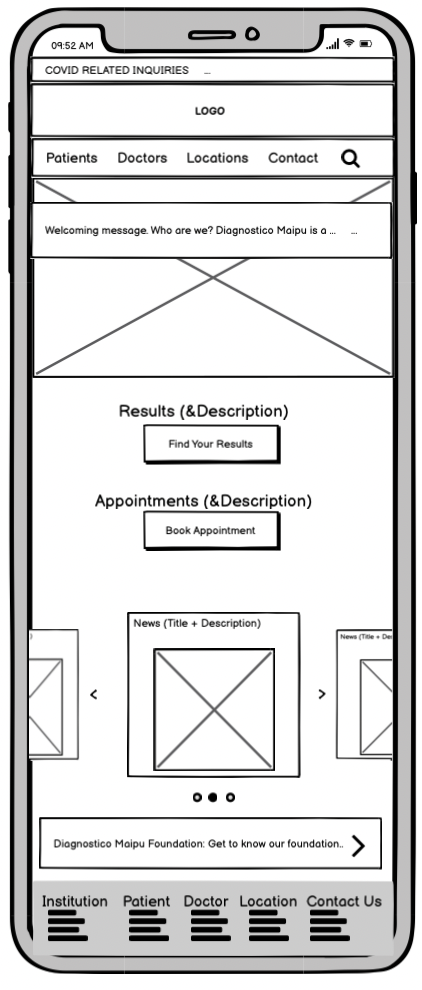

Assignment:
Responsive Redesign
Why?
How?
What?
My
take on it:
Practice redesigning websites.
Choosing an website interface, analyzing its flaws and proposing changes to its design.
This project consists on an analysis part and a redesign part.
Coming out of this project, I am feeling much more confident in identifying flaws in design
and in taking action to make it better.
Part 1: The website and its flaws
For this part of the assignment, the goal was to choose the website we were going to redesign
and analyze it based on usability and accessibility
Website: https://www.diagnosticomaipu.com
What? Argentinian medical center.
Why? I decided on this particular website as I have previously used it and noticed the lack of good design.
Figure1: The following screenshot shows the homepage of Diagnostico Maipu, an Argentinian clinic that works as a diagnostic imaging center as well as a laboratory. Through this website healthcare providers, patients and clients are supposed to be able to find all the relevant information they need. 
Learnability: Is it easy to learn how to use? (For new users)First impression: not very easy.
First thing that pops up is a slideshow about irrelevant information (for the majority of users. For example: “get to know the sex of your baby” or “Look at our new technology”)
Users have to scan the webpage, easily getting lost with the amount of information that is being absorbed at once.
Contact information is nowhere to be found at first glance, after some digging we can find it at the top right of the page, where it is barely noticeable.
Booking an appointment (Turnos Online) and viewing diagnostic test results (Resultados Online) are at the top of the page, in a color that blends in with the background.
The menu bar has some options that open new pages, some that toggle down and others that send you to a section below on the same page. There is no difference being marked between them, indicating anything.
Efficiency: Can typical tasks be done quickly? (for frequent users)
I would say that the page is definitely easier to navigate if you are a recurring user.
Important things get easier to find.
Annoying to have irrelevant information popping up all the time.
If you want to dive deeper into what type of medical study to book (“Turnos Online”), it already gets messier for choosing from the dropdown menu.
Note: No matter what you click it takes you to the same login window
Memorability: Is it easy to recall what to do and how? (For casual users)Not hard, but also not simple.
As the page organization and features (such as the drop down menu described for efficiency) are not particularly intuitive, it's harder to remember something that was hard to use at first.
Again, the immediate take in of all random information is distracting and might make it harder to recall where the buttons that we need to click are.
What? Argentinian medical center.
Why? I decided on this particular website as I have previously used it and noticed the lack of good design.
Figure1: The following screenshot shows the homepage of Diagnostico Maipu, an Argentinian clinic that works as a diagnostic imaging center as well as a laboratory. Through this website healthcare providers, patients and clients are supposed to be able to find all the relevant information they need. 
Usability:
From conducting a quick survey, I know that people who use the website typically want to do 1 of these three things:
schedule an appointment
view their diagnostic test results
get in contact with someone at the facility.
I’m going to be looking at those three things in order to assess Learnability, Efficiency and Memorability.
Learnability: Is it easy to learn how to use? (For new users)
Efficiency: Can typical tasks be done quickly? (for frequent users)
Memorability: Is it easy to recall what to do and how? (For casual users)
Accessibility:

My findings:
59 contrast errors
Most relevant type of error.
From my comments in the previous section on usability, we can see I had noted some of the same contrast errors.
The most relevant information of the page (Titles, buttons) is barely noticeable in part because it is blending in with the background.
Why? Lack of contrast in the colors and size.
No image in the whole page has an alternative text
Lack of accessibility, there would be no description if the image failed to load.
There is lack of consistency with hyperlinks
There are images next to each other and text next to each other of which some have urls that they are linked to and others that don’t. And no way of differentiating between them
Part 2: Visual Redesign
Having reflected on the flaws of Diagnostico Maipu's website, the goal for this part of the assignment is to create a proposal for the redesign. It will consist on low and high fidelity prototypes, as well as visual guide.
Low Fidelity Prototypes:
The low fidelity prototypes were made using Balsamiq. As responsiveness is an essential aspect of this assignment, there is one low-fi wireframe for each: computer, tablet and phone.

 
Visual Design Style Guide:
Part 3: Getting to Work
In this part of the assignment I got the chance to put my observations and my redesign proposal into action, by making a similar version of the website.
Note: There are a few elements that I couldn't completely follow the structure proposed in the design. There are the style of the buttons, the moving carrousel.
You can access the website here: https://happydolphin111.github.io/RedesignedWebsite/
You can access the website here: https://happydolphin111.github.io/RedesignedWebsite/
Citations
Search bar: https://codepen.io/k185/pen/PQajXE